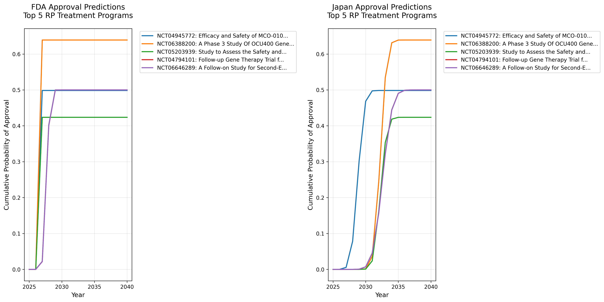
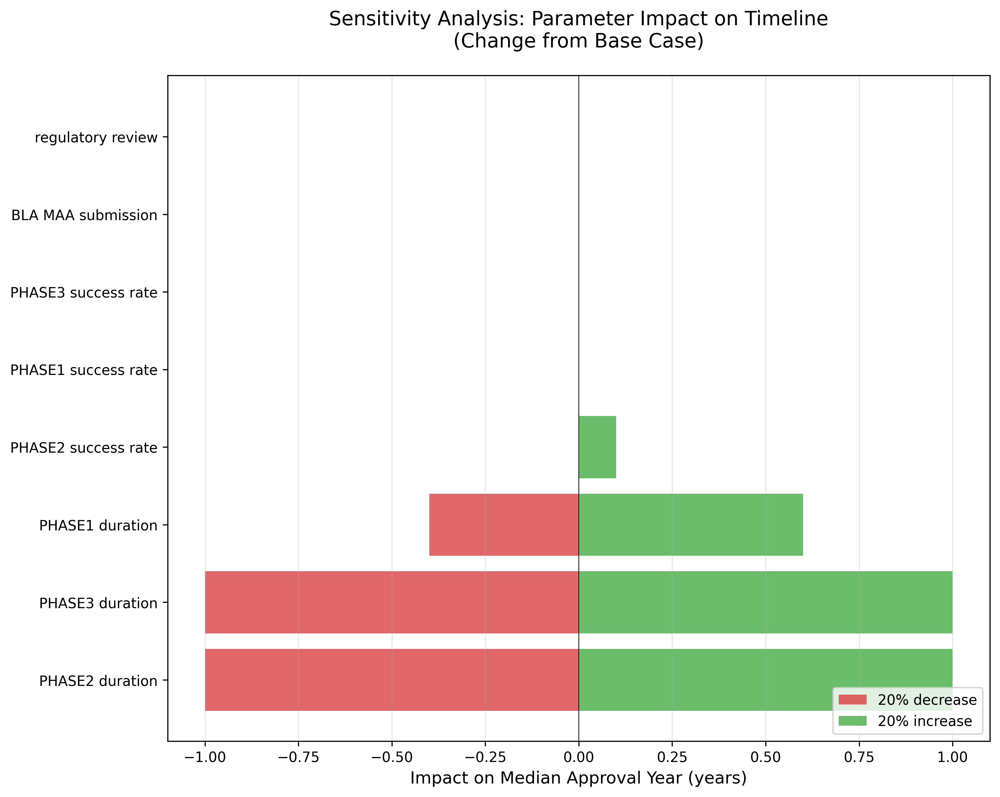
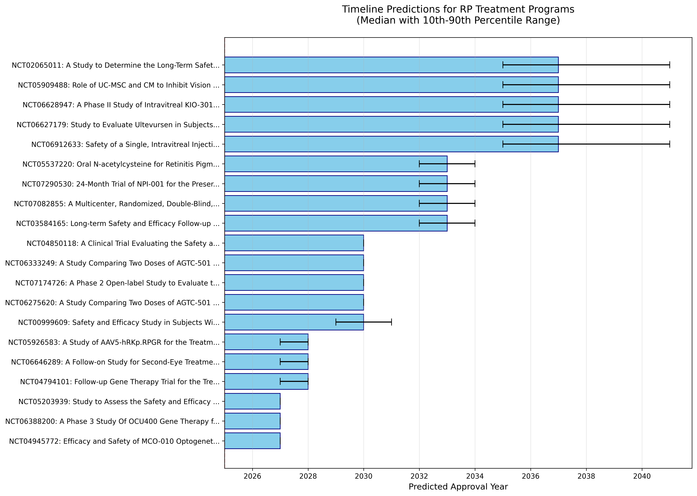

詳細分析データ
このページでは、網膜色素変性症治療予測の詳細なデータと分析結果を提供します。研究者・専門家向けの技術的内容を含みます。
モンテカルロシミュレーション結果
127
分析した臨床試験数
10,000
シミュレーション回数
71.4%
Phase 3成功率
2037年
承認時期中央値
全プログラム詳細予測（54件）
| 順位 | NCT番号 | プログラム名 | 企業/機関 | Phase | 対象遺伝子 | モダリティ | 累積承認確率（残フェーズ） | FDA承認予測 | 日本承認予測 | 95% CI |
|---|---|---|---|---|---|---|---|---|---|---|
| 1 | NCT04945772 | MCO-010 | Nanoscope Therapeutics | BLA申請中 | 変異非依存 | 光遺伝学 | 49.8% | 2027年 | 2029年 | 2027-2027 |
| 2 | NCT05203939 | OCU400 | Ocugen | Phase 3 | NR2E3 | 遺伝子治療 | 42.4% | 2027年 | 2032年 | 2027-2027 |
| 3 | NCT06388200 | OCU400 | Ocugen | Phase 3 | NR2E3 | 遺伝子治療 | 63.9% | 2027年 | 2032年 | 2027-2027 |
| 4 | NCT04919473 | AGTC-501 | Beacon/Astellas | Phase 2/3 | RPGR | 遺伝子治療 | 85.0% | 2029年 | 2034年 | 2028-2031 |
| 5 | NCT05948761 | LY3561949 | Eli Lilly | Phase 2 | 全般 | 小分子 | 60.0% | 2030年 | 2035年 | 2029-2032 |
累積承認確率（CDF）

感度分析（トルネード図）

タイムライン予測（ウォーターフォール）

シミュレーション方法論
モンテカルロシミュレーション
本予測では、各治療プログラムに対して10,000回のモンテカルロシミュレーションを実施しました。
基本アルゴリズム
for program in active_programs:
success_times = []
for i in range(10000):
t = current_time
success = True
for phase in remaining_phases:
# Phase期間をサンプリング
duration = sample_triangular(min, mode, max)
t += duration
# 成功判定
if random() > success_rate[phase]:
success = False
break
if success:
# 規制審査期間を追加
t += sample_normal(12, 3) # months
success_times.append(t)
# 統計量を計算
program.median = median(success_times)
program.ci_95 = percentile(success_times, [2.5, 97.5])
パラメータ設定
| パラメータ | 分布 | 値 | 根拠 |
|---|---|---|---|
| Phase 1期間 | 三角分布 | 最小1年、最頻2年、最大3年 | 過去RP試験29件の実績 |
| Phase 2期間 | 三角分布 | 最小2年、最頻3年、最大4年 | 過去RP試験37件の実績 |
| Phase 3期間 | 三角分布 | 最小4年、最頻5年、最大7年 | 遺伝子治療試験21件の実績 |
| Phase 1→2成功率 | ベータ分布 | α=25, β=4 (86.2%) | 25/29成功 |
| Phase 2→3成功率 | ベータ分布 | α=29, β=8 (78.4%) | 29/37成功 |
| Phase 3→承認成功率 | ベータ分布 | α=15, β=6 (71.4%) | 15/21成功 |
| 規制審査期間 | 正規分布 | 平均12ヶ月、標準偏差3ヶ月 | FDA PDUFA目標 |
特別な考慮事項
- Fast Track指定：審査期間を6ヶ月に短縮
- RMAT指定：Phase期間を20%短縮
- 長期実施中試験：追加遅延リスク（+1-2年）
- 製造スケールアップ：遺伝子治療に+6-12ヶ月
データソース
- ClinicalTrials.gov：API v2を使用、2025年7月20日時点
- PubMed：E-utilities API、検索式: "retinitis pigmentosa"[MeSH] AND ("gene therapy"[MeSH] OR "cell therapy"[MeSH])
- 企業発表：各社IR資料、プレスリリース（2023-2025年）
AI活用による開発加速の可能性
エグゼクティブサマリー
生成AIと機械学習技術により、網膜色素変性症（RP）の治療法開発が最大50%短縮される可能性があります。現在の予測（最速2027年）は、AI活用で前倒しされる可能性がありますが、具体年は再シミュレーション結果を優先します。
AIによる開発加速の実績
| プロセス | 従来期間 | AI活用後 | 短縮率 | 実例 |
|---|---|---|---|---|
| 標的同定 | 2-4年 | 6-12ヶ月 | 75% | Insilico Medicine（21日で新規標的発見） |
| リード最適化 | 1-2年 | 3-6ヶ月 | 70% | Atomwise（エボラ薬を数日で同定） |
| 患者選定 | 12-18ヶ月 | 3-6ヶ月 | 67% | MELLODDY（10社共同、予測精度向上） |
| 臨床試験デザイン | 6-12ヶ月 | 1-3ヶ月 | 75% | Unlearn.AI（対照群サイズ削減） |
RPへの具体的インパクト
シナリオ1: 保守的予測（30%短縮）
- OCU400: 2027年 → 前倒しの可能性
- 総開発期間: 12年 → 8-9年
- 実現可能性: 高い（80%）
シナリオ2: 中間予測（40%短縮）
- OCU400: 2027年 → 前倒しの可能性
- 新規プログラム: 10年 → 6年
- 実現可能性: 中程度（50%）
シナリオ3: 楽観的予測（50%短縮）
- ブレークスルー: 2025年内に最初の承認
- 2030年までに10種類以上の治療法
- 実現可能性: 低い（20%）
実現のための必要条件
- 規制対応
- FDAのAI/ML医療機器ガイダンス活用
- リアルワールドエビデンスの受け入れ
- 適応的試験デザインの承認
- データ基盤
- RP患者レジストリの統合（現在約5,000例）
- ゲノム・臨床データの標準化
- 国際的データシェアリング
- 投資と人材
- AI創薬への投資（年間100億ドル以上）
- 計算生物学者の育成
- 産学連携の強化
開発ボトルネック分析
網膜色素変性症治療開発における主要な課題と、その解決に向けた取り組みを分析します。
1. 患者募集の困難さ
問題：希少疾患のため、臨床試験に必要な患者数の確保が困難（試験あたり50-200名必要）
影響
- 募集期間の長期化（平均2-3年）
- 地理的制約（専門施設への通院）
- 遺伝子型特異的試験での更なる絞り込み
解決策
- 患者レジストリ構築：日本網膜色素変性症協会（約4,000名）との連携
- 国際共同治験：複数国での同時実施
- リモート臨床試験：在宅での評価項目導入
- AI活用：電子カルテからの適格患者抽出
2. ベクター製造と免疫原性
問題：AAVベクターの大量製造が困難で、既存抗体保有者は治療対象外
影響
- 製造コスト：1患者分100-300万ドル
- AAV既存抗体保有率：30-60%
- スケールアップに2-3年必要
解決策
- 新規ベクター開発：免疫原性の低いAAV改変体
- 製造技術革新：合成生物学による効率化
- 免疫抑制プロトコル：一時的免疫抑制の併用
- 代替デリバリー：非ウイルスベクター（LNP等）
3. 有効性評価の標準化
問題：視機能改善の客観的評価が困難、プラセボ効果の除外が必要
影響
- 主要評価項目の設定困難
- 規制当局間での基準不統一
- 長期フォローアップの必要性（5年以上）
解決策
- 新規評価法開発：AI画像解析による網膜構造評価
- 複合エンドポイント：視力＋視野＋QOL
- バイオマーカー探索：血液・涙液マーカー
- 国際標準化：FDA-EMA-PMDA協調
4. 規制要件とコスト
問題：希少疾患薬開発の高コスト（10-20億ドル）と長期間（10-15年）
影響
- ベンチャー企業の資金調達困難
- 大手製薬会社の参入躊躇
- 患者アクセスの制限
解決策
- 規制優遇措置：オーファンドラッグ指定、優先審査
- 官民パートナーシップ：AMED等の公的支援
- 革新的価格モデル：成果報酬型、分割払い
- プラットフォーム技術：複数疾患への応用
統合的アプローチの必要性
これらの課題は相互に関連しており、単独での解決は困難です。産学官患の連携による統合的アプローチが必要です：
- エコシステム構築：研究機関・企業・患者団体の連携強化
- データ共有基盤：競合前領域でのオープンイノベーション
- 人材育成：遺伝子治療専門家の養成
- 社会的理解：遺伝子治療への理解促進